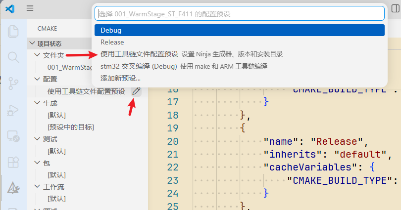
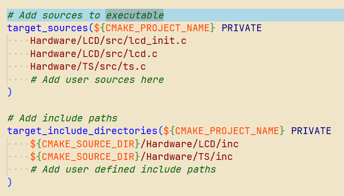

版权信息
warning
本文章为博主原创文章。遵循 CC 4.0 BY-SA 版权协议，转载请附上原文出处链接和本声明。
在Linux上搭建一个通用且灵活的嵌入式开发环境，最经典的组合是 VS Code + GCC交叉编译器 + CMake/Make + OpenOCD。
但本文是在是在WSL环境下，并不是原生Linux环境，因此搭建略有不同。也可借此文章引申到搭建其他MCU运行环境，道理都是一样的。
其实在win下开发MCU还是很方便的，直接用 keil+STM32CubeMX 就可以，我之所以想在WSL下开发主要是为后续使用Linux做主力开发系统做准备。
这里只是简单记录一下流程，以防遗忘，并不是教程
1. 核心工具链
主要是交叉编译器，我们使用ARM Cortex-M 系列的通用交叉编译器：
Arm GNU Toolchain Downloads – Arm Developer
选择x86_64 Linux hosted cross toolchains 版本-
AArch32 bare-metal target (arm-none-eabi)工具链
下载到WSL然后解压缩，比如我下载的是 .tar.xz
就使用命令 tar -Jxvf 解压缩。
解压缩后的文件里有个bin文件夹——我是把这个文件夹软链接然后把软链接加入环境变量。
然后还有cmake，没安装要安装一下。
差不多就这些。
2. 安装烧录与调试工具
OpenOCD (Open On-Chip Debugger) 是开源嵌入式调试的“瑞士军刀”。它支持市面上几乎所有的仿真器（ST-Link, J-Link, DAPLink）和各种芯片架构。
由于WSL对usb的支持还不是很完善，无法直接物理访问 Windows 宿主机上的 USB 接口，还要用工具，就挺麻烦的，因此我就直接采用如下方案：
-
Windows 充当 Server： 在 Windows 上下载并解压 Windows 版的 OpenOCD。将 ST-Link 插在电脑上，直接在 Windows 的命令提示符（CMD/PowerShell）里运行 OpenOCD。它会在本地建立一个 GDB Server（默认监听 3333 端口）。
-
WSL2 充当 Client： WSL 环境中，专注于写代码和编译。使用
arm-none-eabi-gcc编译出带调试信息的.elf文件。 -
TCP 桥接： 在 WSL2 中运行
arm-none-eabi-gdb，通过 TCP/IP 协议连接到 Windows 主机的 IP 地址和 3333 端口。
3. 配置 VS Code 及核心插件
VS Code 安装以下插件：
-
C/C++ (Microsoft): 提供代码补全、跳转和基础解析。
-
CMake Tools (Microsoft): 方便在底部状态栏直接配置和编译 CMake 项目。
-
Cortex-Debug (marus25): 极其关键的插件。专门为 ARM Cortex-M 系列优化，支持直接在 VS Code 里查看外设寄存器 (Peripherals)、内存、反汇编代码以及 RTOS 的任务栈信息。
另：要想使用VSCODE自带的CMake生成目标，还需要配置 CMakePresets.json——。VSCODE CMake插件的配置文件。

然后打开 CMakePresets.json，在configurePresets项里修改
{
"name": "使用工具链文件配置预设",
"displayName": "使用工具链文件配置预设",
"description": "设置 Ninja 生成器、版本和安装目录",
"generator": "Ninja",
"binaryDir": "${sourceDir}/out/build/${presetName}",
"cacheVariables": {
"CMAKE_BUILD_TYPE": "Debug",
"CMAKE_TOOLCHAIN_FILE": "",
"CMAKE_INSTALL_PREFIX": "${sourceDir}/out/install/${presetName}"
}
},修改为这个：
{
"name": "stm32-debug",
"displayName": "stm32 交叉编译 (Debug)",
"description": "使用 make 和 ARM 工具链编译",
"generator": "Unix Makefiles",
"binaryDir": "${sourceDir}/build",
"cacheVariables": {
"CMAKE_BUILD_TYPE": "Debug",
"CMAKE_TOOLCHAIN_FILE": "${sourceDir}/cmake/gcc-arm-none-eabi.cmake",
"CMAKE_RUNTIME_OUTPUT_DIRECTORY": "${sourceDir}/bin"
}
}主要就是设置cmake的输出目录，工具链，还有生成什么文件（generator，你填 Unix Makefiles 就生成makefile，填 Ninja 就是ninja文件）
另：一般来说，使用cubemx生成的项目文件，VSCODE的c语言支持插件（IntelliSense）是不可能正常工作的，会报很多红，找不到路径等等。所以这里我们还需要配置 c_cpp_properties.json,重新配置一下这个IntelliSense。在项目文件夹下创建 .vscode文件夹并在该文件夹下创建c_cpp_properties.json
在 configurations 下创建一个新配置：
{
"name": "STM32_ARM",
"compilerPath": "/home/gdm/prjts/ARM_TOOLCHAIN/AArch32-BareMetal/arm-none-eabi-PATH/arm-none-eabi-gcc",
"compileCommands": "${workspaceFolder}/build/compile_commands.json",
"cStandard": "gnu11",
"cppStandard": "gnu++14",
"intelliSenseMode": "linux-gcc-arm"
}compilerPath 指定你的系统编译器路径，这样一些标准头文件就不会被乱找。
compileCommands IntelliSense就是通过它来解析各种路径，提供语法补全等支持，它由 Cmake自动生成。
CubeMX自动生成的CMakeList.txt 里的这个选项：
# Enable compile command to ease indexing with e.g. clangd
set(CMAKE_EXPORT_COMPILE_COMMANDS TRUE)就是开启生成它的宏。所以如果CMake没有自动生成，请确保开启了这个宏。
intelliSenseMode 则确保 intelliSense 以32位arm架构的规则来为你提供语法分析。
另：如果你又新创建了文件夹该怎么做呢？如果你新创建了文件夹，在这个文件夹里intelliSense又不会解析了。
在 cubeMX 生成的CMakeList.txt 里有下面两项：

注释已经写的很清楚了，添加好后，在重新使用cmake生成一下，cmake会自动更新 compile_commands.json ，然后intelliSense就可以正常工作了。
还是推荐逐个写明添加的文件，而不是使用file和glob，在 CMake简易使用文档中有讲。
4. 项目的初始化
在初始化 STM32 的时钟树、引脚复用和生成外设 HAL 库时，STM32CubeMX 依然是最高效的工具。虽然WSL有WSLg，理论上支持Linux版的CubeMX，但是安装Linux版会有很多依赖也需要安装，所以我还是选择在Win下使用CubeMX。
-
去 ST 官网下载 Win 版的 STM32CubeMX 并安装。
-
在 CubeMX 中配置好芯片、时钟、引脚以及你要用的 RTOS（如果需要）。
-
关键步骤：在 Project Manager -> Project 选项卡中，将 Toolchain/IDE 设置为 CMake（较新版本的 CubeMX 支持）或 Makefile。
-
点击 Generate Code。
5. 整合工作流
另请参见——使用openOCD进行调试-GoDm@'s blog
6. 总结
就是瞎折腾，WSL负责项目的编译和构建，相当于把keil替换为了WSL环境下的VSCODE，且。其他依然在Win环境下。唉 感觉 写了一篇废话